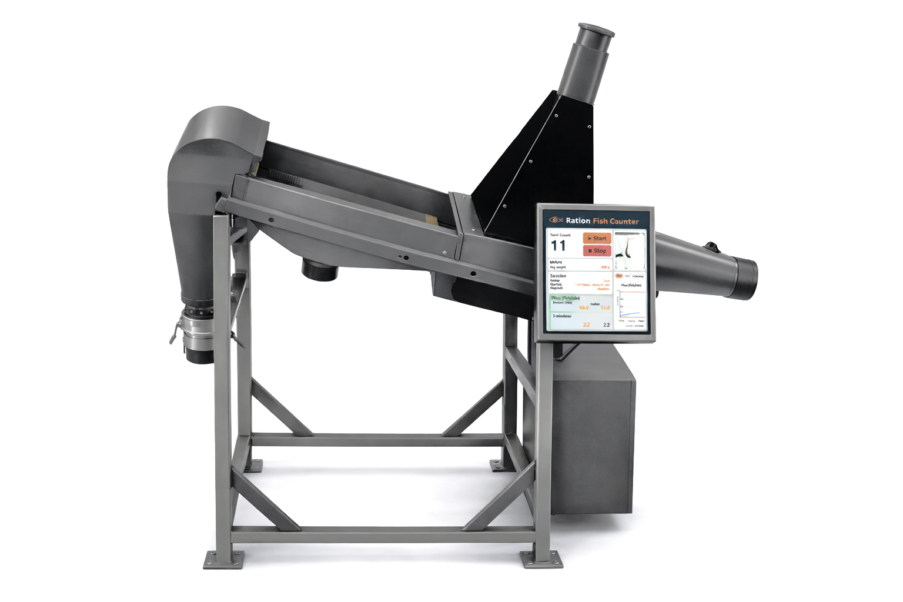
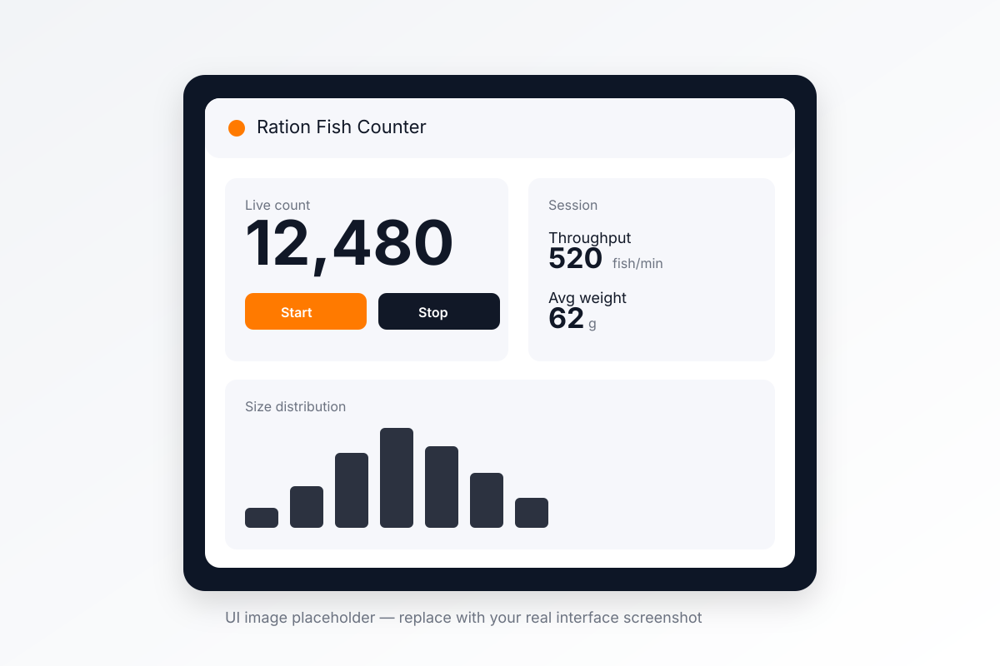
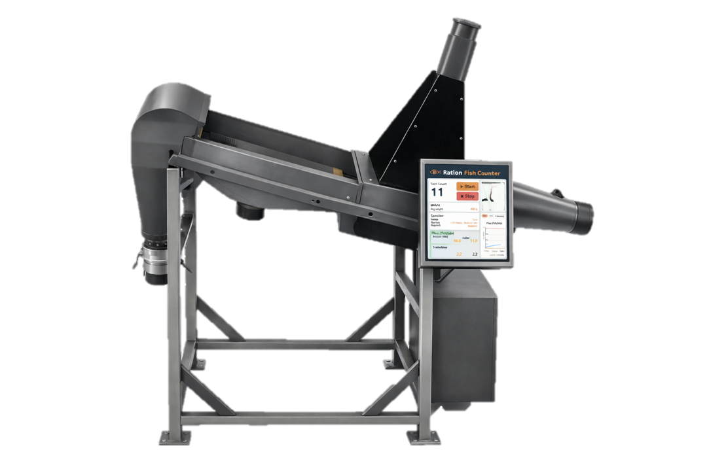

Reliable fish counts with welfare-first design
RationCOUNTER is built for accurate fish counting and biomass-relevant reporting during transfers and grading, while supporting smooth handling and good fish welfare.
- Advanced computer vision focused on precision and operational stability.
- Individual tracking instead of snapshots for reliable counts in fast flow.
- Designed for smooth handling with short time out of water and controlled passage geometry.

The challenge
When the real fish number is uncertain, decisions get weaker
Accurate counts are the foundation for feeding, density control, transfer planning, and biomass reporting in land-based aquaculture.
Transfers create the best counting opportunity
Transfers and grading create a moment when each fish can be observed, but fish still move fast and in dense flow. That makes dependable counting one of the hardest computer vision tasks in aquaculture.
The count must be practical and trustworthy
If operators cannot trust the number, feeding, density management, and reporting all get weaker. Stable counting needs good imaging, controlled passage, and robust tracking without double counts or missed fish.
60 fps
Real-time analysis
400-600
Fish per minute prototype throughput
<1%
Target counting error
Solution
Dry fish counting with precise tracking and biomass-relevant reporting
RationCOUNTER is designed for transfers and grading, where fish pass through a controlled dry channel and are analyzed individually in real time.
Track each fish to avoid double counts
The system tracks individuals between frames instead of relying on simple frame-by-frame snapshots. That improves robustness when flow is fast and fish spacing changes.
Biomass and size distribution
Session summaries include total count, throughput, and size-distribution information that supports biomass estimates, planning, and consistent reporting.
Built for real farm operations
The mechanical design, imaging zone, and operator workflow are built around smooth handling, verification, and dependable daily use rather than lab-only conditions.
Interface view placeholder for live sessions and exported reports
This placeholder represents the operator interface area for live counts, throughput, size distribution, and reporting outputs. Replace it with a production screenshot when one is available.

How it works
From installation to verified results
A straightforward deployment process designed to fit existing handling lines for transfers and grading.
Install on the handling line
Mount the counter where fish are transferred or graded. The dry passage geometry is designed to support smooth, consistent movement through the counting zone.
Spec sheet: Download detailed specifications (add your PDF next to this HTML file)
Count and measure in real time
Fish are imaged at high frame rate and analyzed as they pass the counting zone. Individual tracking supports stable counts even when flow conditions are demanding.
Review, export, and report
Operators can review live sessions and export summaries with count, throughput, and size-distribution metrics for reporting and production planning.
Features
Purpose-built for accurate, dependable fish counts
RationCOUNTER combines controlled fish passage, advanced vision, and operator-friendly reporting to make counts more stable and verifiable.
High-precision counting
Designed for verifiable counts with a target accuracy under 1% in typical operating conditions.
Individual tracking
Tracks fish between frames to reduce double counts and missed individuals in high-throughput flow.
Biomass reporting
Session summaries include size-distribution and biomass-relevant metrics for planning and reporting.
Out-of-water imaging
Controlled dry passage improves visibility and consistency for more robust computer vision analysis.
Operator-friendly workflow
Live session status, clear outputs, and exportable results keep the system practical for daily use.
Built for operations
Stable mechanical design, smooth flow, and support for uptime-focused deployment at real sites.
Fish welfare
Fish welfare by design
Fish welfare is a core design consideration in RationCOUNTER, from passage geometry to operational stability.
Smooth, continuous handling
The counter is designed to support smooth flow with minimal obstruction, short handling time, and controlled geometry through the counting zone.
Consistent conditions for operators and fish
Stable operation without sudden starts and stops supports dependable counting while helping teams handle fish more consistently during transfers and grading.
Controlled dry passage outside water
Fish pass individually through a controlled channel outside of water, where each fish can be observed and analyzed in real time with high precision and practical handling conditions.

Support
Service and support built around uptime
We aim to make deployment straightforward and operation stable, with software improvements and assistance over time.
Commissioning
Installation guidance and configuration to match your handling line geometry and operating conditions.
Remote support
Fast troubleshooting and assistance with clear logs, session data, and responsive follow-up.
Continuous improvement
Ongoing software improvements focused on accuracy, stability, and operator experience.
Contact for information or a demo
Email sales@ration.is to discuss your setup, get a proposal, or schedule a demo.